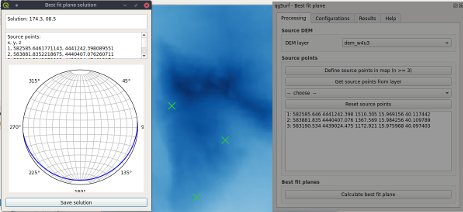

By coupling mapping or remote sensing information with topographic data, this plugin allows to estimate the attitude
of the best-fit-plane to a set of points or lines lying on a topographic surface (example in fig. 1).
This is a common task in geological mapping and analysis.

Fig. 1. Example of estimation of a bedding attitude in the Mt. Alpi area (Basilicata, Southern Italy).
Input data
Elevation information is extracted from a Digital Elevation Model (DEM).
Points can be digitized by the user directly in the map canvas
or, alternatively, loaded from a point/line layers.
When the source DEM crs is in polar coordinates (i.e., latitude and longitude) or its vertical distance unit is
different from the horizontal one (e.g., meters for the height and decimal degrees for the horizontal location),
in order to avoid the production of incorrect results, the user must assign to the project a planar CRS with resulting
horizontal and vertical measures expressed in the same distance unit (e.g., meters both for horizontal and vertical
distances).
Plugin usage
Calculating a solution
The user chooses the DEM to be used as elevation source, by selecting one of the rasters loaded in the project (ref. 1 in fig. 2).
Afterwards the locations to be used for defining the geological plane, are entered via digitization of three or more
points in the map canvas (ref. 2), or alternatively by choosing a loaded point/line layer (refs. 3 and 4).
In the latter case, selected elements will be used for the best-fit-plane calculation. When there is no active selection, all records will be used.
The coordinates of the points defined in the map are added in the list of source points (ref. 6).
It is possible to reset the list of points by clicking the Reset source points button (ref. 5).
When finished with the point definition, the best-fit-plane can be calculated by pressing the
Calculate best-fit plane button (ref. 7). A pop-up window will display the resulting plane dip direction
and dip angle (example in fig. 1, left-side window).
Fig. 2. Screenshot of the module window.
Saving a solution in the database
It is possible to save the solution in a permanent SQLite database, by using the "Save solution"
button (fig. 3, left-side).
Notes can be added to the saved solution (fig. 3, central window).
Fig. 3. Saving a solution in the database.
Prior to saving, the SQLite database has to be defined in the "Configurations" tab (fig. 4).
It is possible to use both a new database or a previously created one, where new data will be appended.
Fig. 4. Definition of the internal SQLite database.
Processing database records
Saved solutions can be inspected, plotted in stereonets, removed or exported in a shapefile
from the "Results" tab (fig. 5).
Fig. 5. Definition of the internal SQLite database.
Selected records can be exported in a new or a previous shapefile, both as points or as lines
connecting the source points, for subsequent GIS processings (fig. 6).
Fig. 6. Export of selected records in a shapefile.
Methodology
The algorithm is based on the application of singular value decomposition technique, in order to derive the eigenvectors of a set of measures.
See the discussion in
Best fit plane algorithms why different results?.